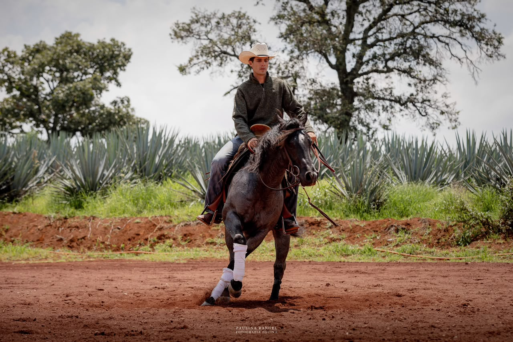
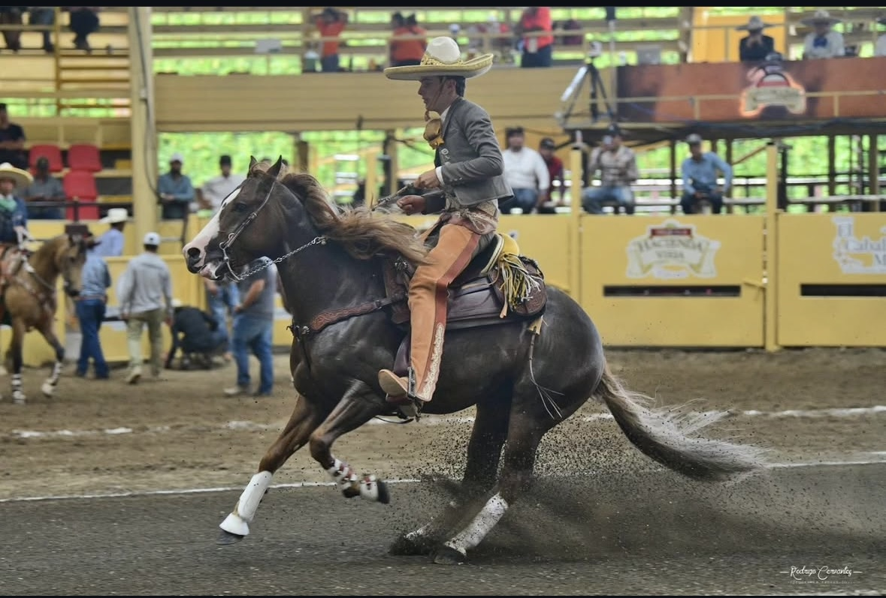
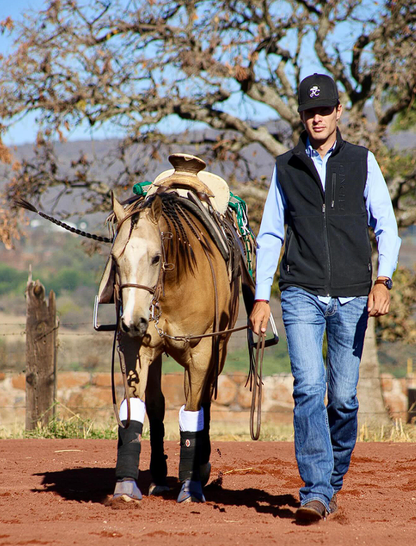

Fundamento
Confianza, equilibrio y comprensión de las ayudas. Se construye una base física y mental antes de pedir velocidad o precisión competitiva.
Consultar ingreso
Método AC
Un plan claro para construir fundamento, desarrollar capacidad atlética y llegar a competencia con un caballo seguro, ligero y preparado.
Tres etapas
El programa no se decide por una fórmula fija. Inicia con la lectura del caballo, su condición actual, su temperamento y el objetivo de su propietario.
Confianza, equilibrio y comprensión de las ayudas. Se construye una base física y mental antes de pedir velocidad o precisión competitiva.
Consultar ingresoFortaleza, respuesta ligera y ejecución progresiva. Cada ejercicio se integra con intención para producir control sin apagar la voluntad del caballo.
Nuestra filosofía
Preparación específica, consistencia y manejo del escenario. Se afina el binomio para responder con criterio cuando cada detalle cuenta.
Conocer ejemplaresPrincipios de trabajo
El rendimiento sostenible aparece cuando la preparación física, la claridad mental y la precisión técnica avanzan juntas.
Observamos aptitudes, hábitos y respuestas para definir prioridades reales de trabajo.
La exigencia aumenta sólo cuando el fundamento permite conservar confianza y calidad.
El propietario recibe contexto sobre avances, decisiones y siguientes objetivos del proceso.
Ruta de trabajo
Las etapas se adaptan al caballo. La secuencia aporta orden; el criterio profesional define el ritmo.
Condición física, nivel de respuesta, temperamento, historial y objetivo del binomio.
Prioridades técnicas, carga de trabajo y una ruta de desarrollo coherente con su etapa.
Observación continua, ajustes y comunicación del progreso con el propietario.
Preparación del escenario, consistencia de maniobras y decisiones oportunas para competir.

Comienza el proceso
Cuéntanos sobre tu caballo, su etapa actual y el objetivo que quieres construir.